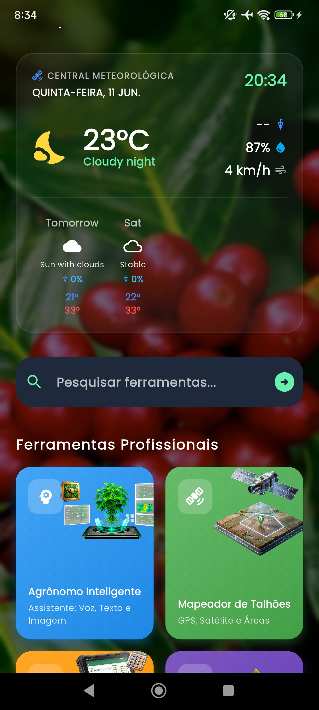
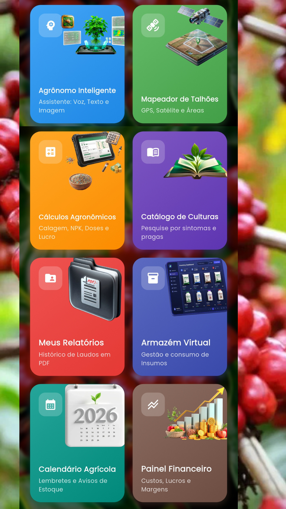
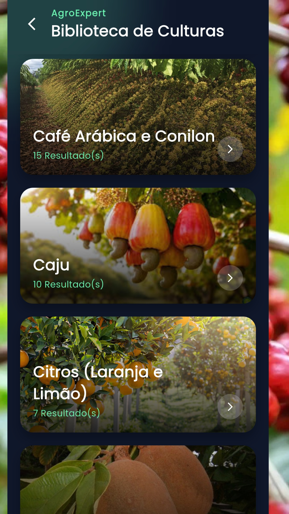
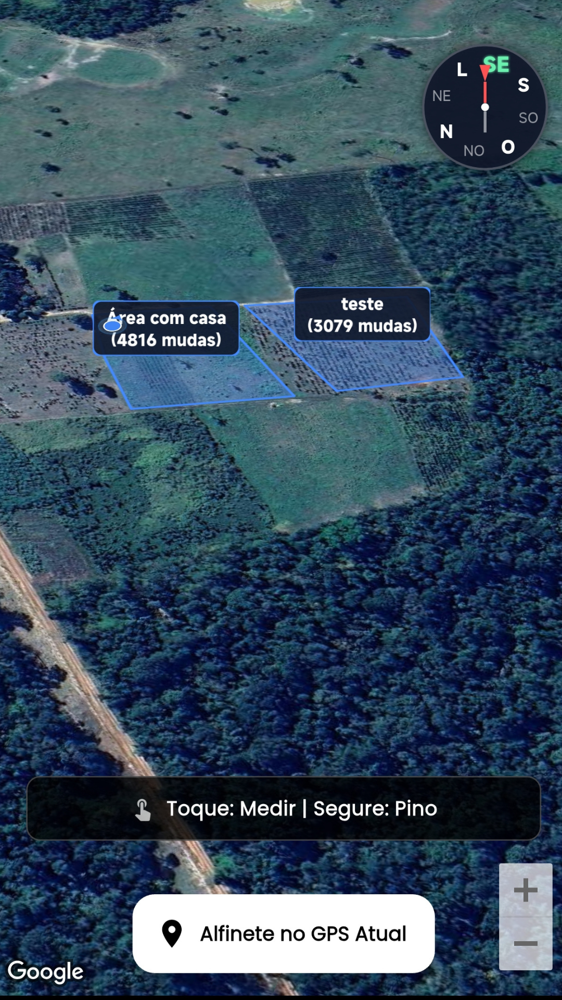

O ERP da fazenda 100% offline. Lançamento financeiro por talhão, controle de estoque e um Agrônomo de Inteligência Artificial para identificar pragas na lavoura direto na câmera do celular.

Projetado com arquitetura de software avançada (ERP) para lidar com a dura realidade da agricultura: o trabalho pesado na terra e a necessidade de dados exatos para a colheita.
A roça não tem sinal de celular. Mapeie seus talhões, registre custos de adubação, defensivos agrícolas, horas de trator e manejo usando nosso banco de dados local. Trabalhe o dia todo sem travamentos.
Conectou à internet? A inteligência artificial entra em ação. Tire foto de uma planta doente e o motor do Agro Expert gera um laudo em PDF da praga, fungo ou deficiência nutricional em segundos.
Conheça o ecossistema de ferramentas que vai transformar a gestão da sua propriedade.



Funcionalidades testadas na terra, feitas para acabar com o prejuízo invisível na cafeicultura e agricultura geral.
Calcule rentabilidade por hectare, custos de armazém e fluxo de caixa. Descubra qual área da fazenda está dando lucro.
Cálculos agronômicos avançados interligados com central meteorológica para você aplicar os defensivos na hora certa.
Software rural completo disponibilizado de forma gratuita, monetizado com transparência via Google AdMob.
Gerador embutido para criar relatórios em PDF do seu histórico de safra, laudos da IA e compartilhar áreas mapeadas.